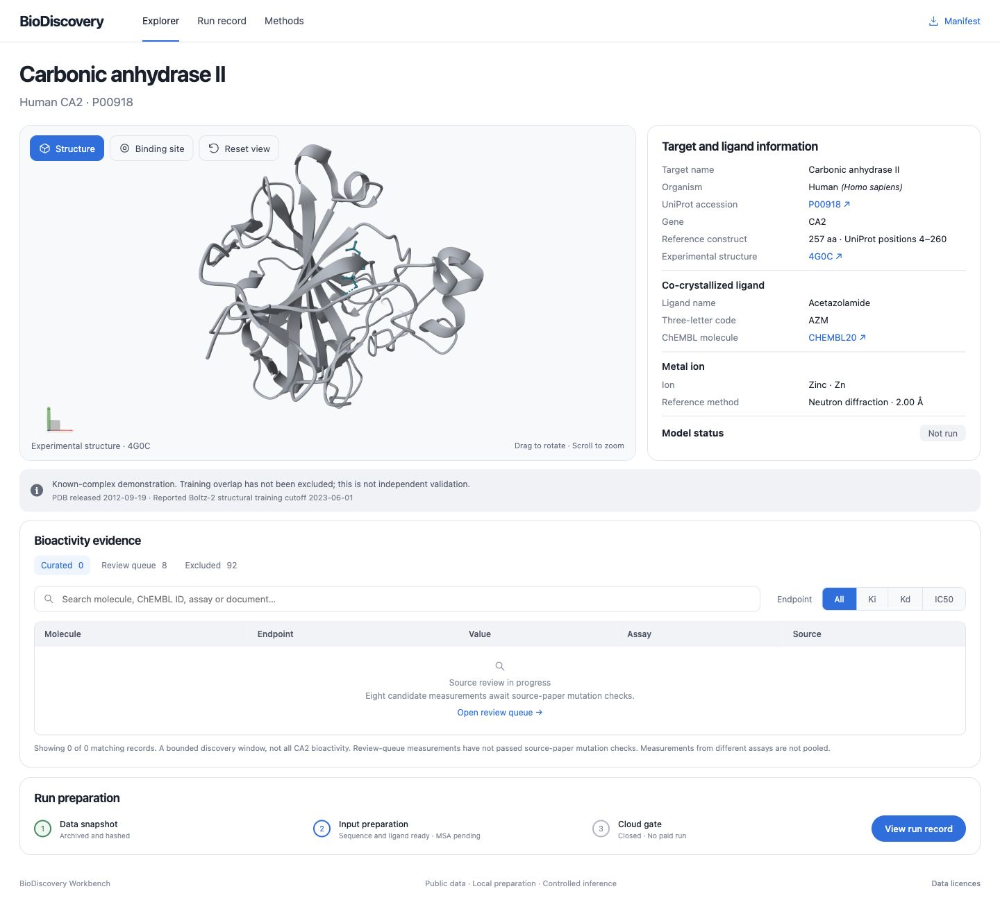
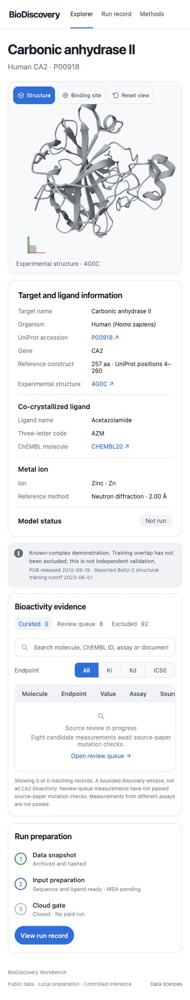

BioDiscovery Workbench
A scientific data platform connecting protein structures, bioactivity evidence and a reproducible AI inference workflow.
OPEN LIVE EXPLORER ↗

01 — THE PRODUCT
Connect the molecule to its evidence.
BioDiscovery brings public protein and bioactivity data into an inspectable scientific workspace. The first release focuses on human carbonic anhydrase II: UniProt P00918, ChEMBL CHEMBL205 and the experimental 4G0C complex with acetazolamide and zinc.
The live Explorer combines a manipulable Mol* structure, binding-site focus, evidence filters, source records and a downloadable artifact manifest.
02 — DATA ENGINEERING
Source records remain connected to the interface.
The preparation pipeline archives UniProt, PDB and ChEMBL records, checks target identity and maps the 257-residue reference construct to UniProt positions 4–260. Original and prepared coordinates are stored separately, with SHA-256 hashes for 109 snapshot artifacts.
A bounded window of 100 bioactivity records is classified by assay assignment, endpoint, units, duplicate flags and review status. Eight candidates await source-paper mutation checks; 92 records are marked as potential duplicates. Pending evidence remains separate from the curated set.

03 — AI WORKFLOW
Controlled inference, separate from public browsing.
The owner-operated Python workflow prepares sequence and ligand identities for Boltz-2. Cloud preflight requires verified provider limits, archived MSA, pinned model artifacts and an explicit timeout. SQLite records run identity and state; the public static site cannot launch GPU jobs.
The current release includes data preparation, the Explorer, offline alignment utilities and a gated Modal adapter. Real GPU inference is the next milestone. The saved-run view displays this status explicitly; affinity prediction is disabled for this stage.
04 — REPRODUCIBILITY
An inspectable engineering system.
Sixteen automated tests cover target and species mismatches, mutation handling, duplicate and invalid measurements, artifact integrity, cloud preflight and rigid alignment. The application is checked in desktop and mobile browsers.
The experimental complex is a known reference. Its release date and the reported model training cutoff stay visible beside the structure, so a future reconstruction can be interpreted in context. A broader scientific benchmark is a separate phase.